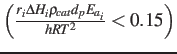

Next: Glycerol to Oxygenates (Step Up: Results and Discussion Previous: Absence of Mass and
In the reaction pathways shown in Figure 1, each step (R1-R4) contains more than one elementary reaction.
For example, step R1, when converting glycerol to acrolein,
involves two sequential dehydration reactions [#!Gu2012!#,#!Zhang2015!#,#!Galadima2016b!#],
while more complex reactions (e.g. hydrogenation, dehydrogenation, deoxygenation, etc.)
occur when other oxygenates are produced [#!Park2015!#,#!Tamiyakul2015!#,#!Wang2016!#].
Step R2 includes deoxygenation, dehydrogenation and C-C bond cleavage reactions,
while step R4 includes oligomerization, cyclization and dehydrogenation.
Step 3 refers to pathways where C  gases do not exist.
Thus the overall GTH conversion comprises a complex network,
which can be reduced to a few equivalent lumped reactions: steps R1-R4.
As lumped pseudo-components, oxygenates represent a mixture of acetaldehyde, propanal, acrolein and hydroxyacetone.
Gases represent a mixture of methane, ethylene and propylene, while aromatics refer to C-C aromatic hydrocarbons.
gases do not exist.
Thus the overall GTH conversion comprises a complex network,
which can be reduced to a few equivalent lumped reactions: steps R1-R4.
As lumped pseudo-components, oxygenates represent a mixture of acetaldehyde, propanal, acrolein and hydroxyacetone.
Gases represent a mixture of methane, ethylene and propylene, while aromatics refer to C-C aromatic hydrocarbons.
The reaction rate of step Ri is defined by Eq. (1).
Since all kinetic measurements, as described in the experimental section, were conducted under differential operating conditions (conversion 5-10%), the reaction rate is calculated by Eq. (2).
The consumption/formation rates of glycerol and lumped components (oxygenates, gases and aromatics) are given by Eqs. (3 - 6).
Note that among the four Eqs. (3 - 6), only three are independent. An overall material balance yields the following Eqs. (7 - 8).
Yang Xiao 2017-12-05